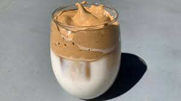

Dalgona Coffee>

Description:
Cold frothy coffee to enjoy everyday
Ingredients:
- Instant coffee
- White sugar
- Milk of preference
Steps:
- Take 2 tablespoons of instant coffee and sugar into a mug
- Add about a teaspoon of water to the mixture
- Using a regular spoon slowly start whisking the mixture and continue until it becomes creamy and lighter in colour
- Now scoop this creamy coffee mixture on top of chilled milk
- Optionally, you can drizzle on some caramel sauce
- Stir to mix the coffee and milk and enjoy the creamiest mug of coffee!